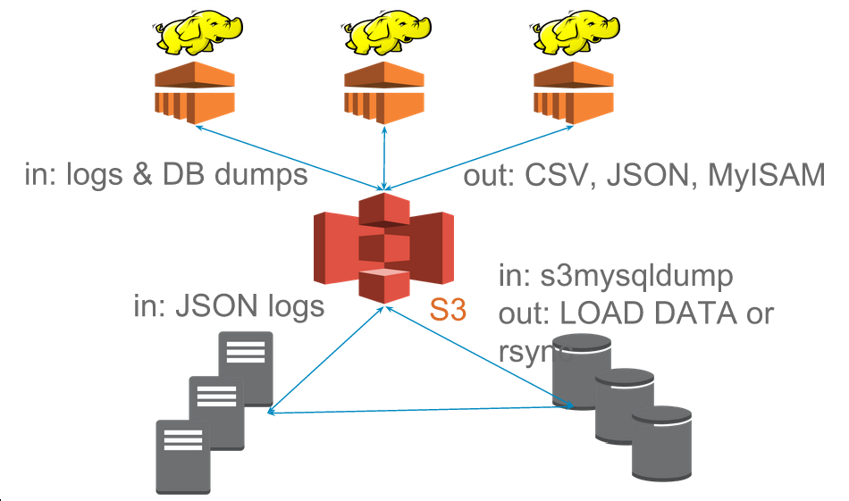

WhereHadoop
Table of Contents
- 1 OH HADOOP, WHERE ART THOU?
- 2 Step Back
- 3 Don't Exist
- 4 Multiple Systems
- 5 Transforming Data
- 6 Contrast
- 7 Metrics
- 8 Metrics Server
- 9 Contrast
- 10 Transform Data
- 11 Building MyISAM files
- 12 Database Views
- 13 System Views
- 14 Contrast
- 15 Source: MySQL
- 16
S3mysqldump - 17
mysqldump - 18 Upload to S3
- 19 Table Change Log
- 20 Hadoop Merge
- 21 Alternatives
- 22 Overview
- 23 Tips: Input
- 24 Logging Format
- 25 Resources
- 26 Tips: Output
- 27 Outputs
- 28 Resources
- 29 Take Aways
- 30 Thank You
1 OH HADOOP, WHERE ART THOU? center
Jim Blomo
1.1 Hi notes
- Engineering Manager on one of Yelp's Data mining teams
- Lots of interesting talks specifically about Hadoop
- This talk is a bit different: it's about the stuff around Hadoop
- How do we get data in? Data out? Lessons learned.
2 Step Back
- What's the ideal data store?
- Fast: ingestion, point lookups, analytics, batch processing
- Big: user data, all events, no archiving
- Flexible: no downtime for schema changes, hold any type of data without preparation
2.1 Ideal notes
- We want something that is fast, in all the ways. OLTP, OLAP, machine learning. We want an algorithm, we run it on this data storage
- Obviously we need to handle tons of data, and we're realizing it can be best to throw nothing away
- One of the rallying cries for NoSQL is ability to just throw stuff into a data storage without planning a consistent schema ahead of time. So let us do that!
- Store and process any type of formatted data, not just text with arbitrary fields: multimedia, like images or video.
- Who has this data store? Who has a single place that can handle all these things?
3 Don't Exist center
3.1 Unfortunately notes
- Unfortunately, this data store doesn't exist
- Engineering is fundamentally about trade-offs, and when making a system fast for one purpose, you might make it unsuited for another
- So what do we do? Can't have what we want, so we throw a fit. right?
4 Multiple Systems
- Use systems well suited for a purpose
- Different purposes => different systems
- Trade-off: management complexity
4.1 No Fits notes
- So we can't have it all in one system, we use multiple systems
- We'll get into the specifics later, but the big idea, and one you've heard before, is use the tool for the job
- Now, we're still making a trade-off here! Managing multiple systems is typically more difficult than an all-in-one system
5 Transforming Data two_col
- Most important management problem: having the right data!
- Hadoop transforms data into purposeful formats
5.1 Answer notes
- Ultimately, this is the answer to the question "Oh Hadoop, where Art thou?"
- Hadoop is in the middle of all of the systems that have been chosen to fulfill a specific purpose
6 Contrast
- You have big data? You need a Hadoop.
- Analytics too slow? You need a Hadoop.
- Running out of memory? You need a Hadoop.
6.1 Alternatives notes
- The alternative to this view that Hadoop's best fit is transforming data for appropriate systems is that Hadoop is the solution itself for whatever problem you have
- Most typical is "too much data? use Hadoop to process it", but lots of variation
- This puts too much focus on Hadoop, and not enough on the surrounding systems
- How do those systems recover from error? How do we know what the source of truth is? Can we re-run processing if there is more data?
- Let's look at some examples
7 Metrics
- Metrics are summary of all events
- Input: storage of all events
- Output: quick lookup by time of event counts
7.1 Ideally notes
- Ideally we'd like to store all events
- When we want metrics we just do a query of all of them: SELECT count(*) GROUP by day
- But we don't have this ideal system that can quickly group over all time
- So instead we pre-calculate the events that occurred, and put them in a format that can easily lookup a smaller number of data points, with some filters like date range
8 Metrics Server
- Metrics served out of MySQL
- Input: JSON logs
- Output: MySQL
LOAD DATA(CSV)
8.1 Output notes
- So we view this as a transformation of data from event data in JSON
- To a format that can be ingested by MySQL for a purpose built metrics system
9 Contrast two_col
- Read logs
- Connect to DB
- Increment counter
9.1 Mutable notes
- Instead of doing a transformation of data, we are using Hadoop to directly update a system
- Still using Hadoop! Still processing big data! But not in a way that takes the whole system into account
- What if all the logs were not uploaded. How do we run this job again? If this is filling multiple metrics and we wanted to add some, how do we re-run this job?
10 Transform Data
- Output of many Yelp jobs are MySQL consumable format
mrjobcan be run inside a Python process, which loads data from result- Extreme case: avoid MySQL load from ingestion by building MyISAM files
11 Building MyISAM files
- Hadoop job downloads a CSV output
- Local MySQL instance run on worker node
LOAD DATAexecuted locally, MyISAM file uploaded to S3MYIandMYDfiles synced to MySQL datadir
11.1 Details notes
- We are still transforming data. So typically a first step in this process is creating CSV output. This is also useful for other applications that may want to use this data
- A Hadoop job will download the CSV file, the path taken from input, and create a MyISAM file on a local instance of S3
myisampackis run on the result, and then uploaded to S3- Files downloaded locally and installed on MySQL machine. no need to restart, MySQL will recognize the file once it's read
- Just another example of Hadoop's ability to produce a wide range of outputs from inputs: it's strength
12 Database Views
- Concept of transformed data has a parallel in DB world
- Views: result set of a stored query
- Materialized View: pre-executed query, results physically saved
12.1 DB notes
- Database views are defined with a query. The output of the query can itself be queried like a table
- Used to simplify querying while being able to have normalized data storage.
- Our metrics query is an example: if the database contained all events, but we didn't want an analyst who only cared about events per day to have to understand the event schema
- Normal views will run the definition query in the background. Materialized views will logically run the query every time the source table is updated and keep around the results
- That way, when a view is queried, it can look up a "cached" version
- Unfortunately, these views are only available inside the database
13 System Views
- Hadoop materializes views of data across systems
- Views should be updated when source data changes
- Views do not have state beyond the source data
13.1 Lessons notes
- The database world has done a good job creating systems that are consistent and understandable
- We can learn a lot of the lessons from their features, even if a relational database doesn't fit some of our problems
- These properties allow your multiple systems to stay in sync, recover more easily, and the operators to understand the state and flow of data
14 Contrast
- Hadoop and other process simultaneously update systems
- There is no ultimate data store - multiple systems updated in parallel
- Inconsistencies impossible to resolve
14.1 Alternative to views notes
- The alternative to views is that all systems have some shade of truth
- If one data store holds events, and another holds counts of events as recorded from the webserver, when data is inconsistent, impossible to resolve.
15 Source: MySQL
- Views that combine OLTP data with logs
- Search behavior per category
- Queries in logs; categories in database
15.1 Challenge notes
- We regularly run algorithms that need data on behavior around and item, and properties of that item
- When someone searches for "burrito" we should probably show results in the Mexican restaurant category, rather than a sandwich place that a reviewer mentions burrito in
- So we need data that is stored in the database to be available to Hadoop jobs that are generating metrics views
16 S3mysqldump
mysqldumpwrites out data inINSERTformat- "table change logs" capture incremental change
- Hadoop merges incremental changes into complete dumps
- Jobs can read merged dumps and write out another format
16.1 Overview notes
- mysqldump used to get data from MySQL
- Python process uploads either full or partial dump to S3
- Hadoop merges these partials dumps into a format that can be read by later jobs
17 mysqldump
- Can be used locally
- Reliable text serialization of data

17.1 Why notes
- We currently don't allow incoming connections from our EMR Hadoop clusters to any database, so needed something to dump locally
- We use Hadoop Streaming for most of our Hadoop jobs, so having a regular text format for data was very important
- Alternatives like Sqoop expect to run from Hadoop, have Java serialization format
18 Upload to S3
- Writeen using Python boto library
- Uses multipart upload for large files
- Open Source: https://github.com/Yelp/s3mysqldump
18.1 Wraps up notes
- The part we wrote kicks off the mysqldump, splits up the file if necessary for multipart uploads, handles upload
- Open source, available for download
19 Table Change Log
mysqltrigger on changes to data- Write out change to another table
- <table, change-type, row-id, timestamp>
19.1 log notes
- Log is used to grab IDs that have changed past a given time
- When generating an incremental, use the timestamp to grab all IDs that have changed since the last upload
20 Hadoop Merge
- Merges incremental upload with the last successful merge
- Full dumps are completed weekly to catch deleted rows, schema changes
- Merge code can read
INSERTformat
20.1 merge process notes
- Fairly straight forward, group by identifiers in the table, and output only the most recent update
- Advantage of Hadoop: can transform data from other formats
21 Alternatives
- Sqoop: Hadoop driven database extraction
- Espresso: LinkedIn project with data change capture
- MySQL binlog parsing
21.1 issues notes
- Sqoop already discussed: non-local, Java dependencies
- Espresso as a installable system does not sound ready, plus would be a huge project to migrate to
- Not as reliable text serialization, statement logging insufficient for many changes
22 Overview center

23 Tips: Input center

23.1 Change Gear notes
- So if Hadoop's strength is transforming data, I want to talk about some tips for making sure your data is easily transformed and useful for a variety of outputs
24 Logging Format
- Use a machine parsable format for logs: JSON, Avro, etc.
- Aim for one line per service per request
- Use standard fields, but allow for "extras"
- Try to log every ID on a page
24.1 Notes notes
- Yelp uses Ranger
- We're still standardizing on fields, but still is causing some pain
- Must allow your developers to iterate quickly, but there's two iterations to consider: the developer consuming the logs, and the developer logging
- Eg. in a Yelp search result, we'd like to see every business ID we displayed, even if it wasn't clicked so we can collect click-through metrics
- Some of your pages may have "similar items"… same deal
25 Resources
- http://sites.computer.org/debull/A12june/pipeline.pdf
- Uses standard fields for automated metrics calculations
- http://sites.computer.org/debull/A12june/pipeline.pdf
- Automatic materialized view of logs based on standard fields
26 Tips: Output center
27 Outputs
- Know your S3 consistency guarantees
- Hadoop OutputFormats provide flexibility
- Use standard formats and paths
27.1 AWS notes
- S3 Hint: there are almost none
- OutputFormats can give you ability to write in almost any format: to multiple subdirectories, in a binary format, etc. Keep in mind the format you'd like to transform to, and let Hadoop do the work
- Hive, HBase, others add-ons have expected path and output format. Even if you're not going to use them now, default to their standard when writing out. They've thought about issues and makes future compatibility easier
28 Resources
29 Take Aways
- Hadoop is most effective as a system to transform data
- Data must be transformed for consumption by targeted systems
- Systems modeled as views are understandable, idempotent, robust
30 Thank You center